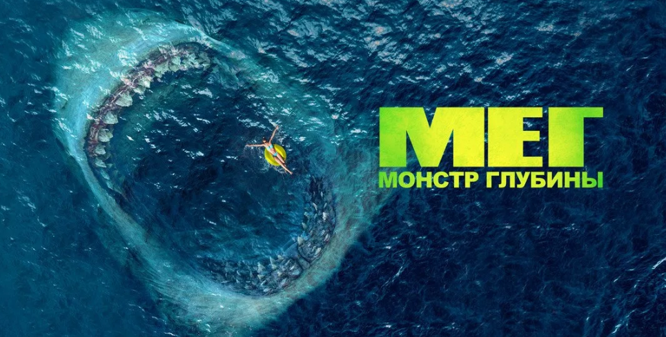

Для каждого любимый фильм это что то свое, каждому нравятся разные жанры , хоррор , комедия, фентези, драма , каждый фильм это исскуство , которое снимали месяцами годами, для того , чтобы мы зрители увидели этот шедевр. Для нас зрителей это всего ничего , посмореть фильм , с близкими людбми либо одному, взять куча еды, попкорн, колу, чипсы , хорошо провести время в конечном итоге, оценить этот фильм , но если задуматься какая огромная работа была проделенна режиссером , оператором , художником , звукорежессером, становится очень захватывающе , если фильм понастающему хорош.
Например для меня любмый фильм это Мег: монстр глубины. Американский научно-фантастический боевик режиссёра Джона Тёртелтауба. Фильм поставлен по роману Стива Альтена[en] 1997 года «Мег: История ужаса». Премьера фильма в России состоялась 9 августа 2018 года.
Джонас Тейлор, спасатель-ныряльщик, пытается спасти группу учёных, оказавшихся внутри атомной подводной лодки. Когда Тейлор и Джордан Мартин-Маккей спасают последнего оставшегося в живых, он видит, что корпус подводной лодки протаранило неизвестное существо. Когда он возвращается на спасательное судно, в повреждённой подводной лодке застревают двое учёных. Тейлор решает уйти, понимая, что завершение спасения приведёт к гибели всех на обоих судах. Вскоре после отстыковки аварийная лодка взрывается. Рассказ Тейлора о том, что катастрофу вызвало гигантское морское существо, отклонён доктором Хеллером, полагающим, что Тейлор страдает от психоза, вызванного давлением. Спустя пять лет миллиардер Джек Моррис, финансирующий исследовательский объект «Мана-1», прилетает туда и встречается с доктором Минвей Чжаном. Чжан и его дочь, океанограф Сюин, возглавляют миссию по изучению более глубокой части Марианской впадины, скрытой облаком термоклина сероводорода. Туда на глубоководном батискафе спустилисть трое исследователей — Лори (бывшая жена Тейлора), Тоши и Уолл. Поначалу миссия идёт хорошо, но затем на батискаф нападает неизвестное существо, в результате чего они теряют контакт с «Мана-1». Джеймс «Мак» Макрейдес и Кристи Брайс, другие члены экипажа на станции, Мак предлагает отправить Тейлора, чтобы попытаться спасти их, сославшись на сходство с его историей. Несмотря на возражения Хеллера, Чжан и Мак решили отправиться в Таиланд, чтобы нанять Тейлора. Сюин под контролем Кристи, спускается во впадину, чтобы попытаться самой спасти экипаж батискафа, но подвергается нападению гигантского кальмара. Затем появляется гигантская акула и убивает его. Согласившись помочь, Тейлор достигает захваченного аппарата и спасает Лори и Уолла. Однако, когда гигантская акула возвращается, Тоши жертвует собой, закрыв дверь люка и отстыковав спасательный корабль, позволяя Тейлору, Лори и Уоллу бежать безопасно, в то время как он отвлекает внимание акулы, после чего она уничтожает батиска На «Мана-1» команда выясняет, что акула, убившая Тоши — мегалодон, самая большая из когда-либо известных акул, которая, как считалось, вымерла много миллионов лет назад. Между тем Мэйин, дочь Сюин, спускается на нижний уровень станции, подходит к большому стеклу с видом на океан и видит мегалодона сквозь стекло, которое тот пытается прокусить. Когда Сюин вместе с Джонасом находят девочку, они наблюдают, как мегалодон съедает детёныша кита. Затем экипаж осознаёт, что акула прорвалась из глубины впадины, проплыв через отверстие в термоклине, созданное взрывом теплового вентиля, ненадолго подняв температуру, достаточную для безопасного перехода. Группа узнаёт, что мегалодон потопил несколько кораблей, и решает отследить и отравить его. Джонасу удаётся подплыть к акуле и прицепить на неё маячок, затем Сюин в специальной клетке спускается под воду и стреляет в мегалодона дротиком со смертельной дозой эторфина, но при этом оказывается едва не проглочена хищником прямо в клетке, причём повреждается кислородная маска Сюин, однако Тейлору удаётся спасти её. Несмотря на первоначальный успех, Тейлор комментирует Сюин, что размах челюстей этой акулы по размеру не совпадает со следами на стекле нулевого этажа станции. Вскоре после этого из воды, проглотив Уолла живьём, выныривает колоссальный мегалодон и, пожирая тушу меньшего мегалодона, опрокидывает катер. Чтобы спасти остальных, Хеллер отвлекает акулу на себя и погибает, как и д-р Чжан, получивший травмы при кораблекрушении. Выжившая команда возвращается к «Мана-1» в двух лодках. Моррис рассказывает, что он сообщил органам власти и ВМС соседних стран о мегалодоне, тогда как экипажу станции он не по силам. С наступлением темноты Моррис пытается уничтожить мегалодона, приказав экипажу вертолёта сбросить на него модифицированные глубинные заряды, сославшись на то, что действия существа могут привести к судебным искам. Он подходит к туше предполагаемого мегалодона в лодке, но обнаруживает, что это кит. Когда мегалодон приближается, лодка резко ускоряется, Моррис падает за борт и мегалодон пожирает его. Наутро Тейлор и оставшаяся команда «Мана-1», обнаружив, что Моррис обманул их, отслеживают акулу самостоятельно и понимают, что она находится на пути к переполненному пляжу в заливе Санья-Бей на острове Хайнань. Мегалодон убивает нескольких отдыхающих, прежде чем экипаж «Мана-1» воспроизводит звук голосового сигнала кита, чтобы привлечь внимание акулы. Тейлор и Сюин пытаются уничтожить мегалодона с помощью навесных торпед, но безрезультатно, и в процессе батискаф Тейлора получает сильные повреждения. Тейлору удается вспороть брюхо мегалодону острым куском обшивки батискафа в зоне повреждения, после чего он вручную наносит удар гарпуном в глаз мегалодону, которого затем пожирают многочисленные акулы, привлечённые запахом крови. Тем временем Сюин удалось эвакуировать всех на яхту, зафрахтованную отмечавшей свою свадьбу китайской парой. Вместе с Тейлором она поднимается на борт, и он заявляет, что нуждается в отпуске, в ответ на что получает от Мэйин предложение пригласить и её маму.
Это был первый фильм про большую акулу , который мне действительно понравился. Фильм в котором хорошая графиами, в нем детально преобразили акулу , и сделали так , чтобы она выглядила понастоящему хорошо, как настоящая.В этом году вышла вторая часть этого фильма , не знаю какая она, так как я еще не смотрела , но надеюсь , что она превзойдет все ожидания

| Режиссер | Актеры | Сценаристы | Продюсеры |
| Джон Тёртлтауб | Джейсон Стэйтем Ли Бинбин Рэйн Уилсон Клифф Кёртис Уинстон Чао Шуя Софиа Цай Руби Роуз Пейдж Кеннеди Роберт Тейлор Джессика Макнэми Оулавюр Дарри Оулафссон |
Дин Георгарис Джон Хобер Эрих Хобер Стив Альтен |
Кеннет Этчити Белль Эйвери Чэнь Цзе Лоренцо Ди Бонавентура Рэнди Гринберг Том Херн |